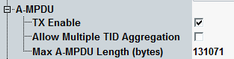

A-MPDU Settings
These settings configure aggregate MPDUs (A-MPDU) with or without multiple TIDs for HT, VHT, and HE bursts.

Enables or disables A-MPDU with multiple MPDUs.
Remote command:Enables or disables different TIDs within an A-MPDU. This setting is only relevant for HE frame formats, only when the DUT also supports reception and when data packets from more than one TID are configured in the R&S CMW.
See also "Packet Generator Settings".
Option R&S CMW-KS657 is required.
Remote command:Sets the maximal length of A-MPDU subframe.
Remote command: